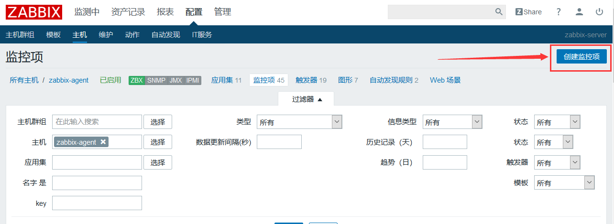
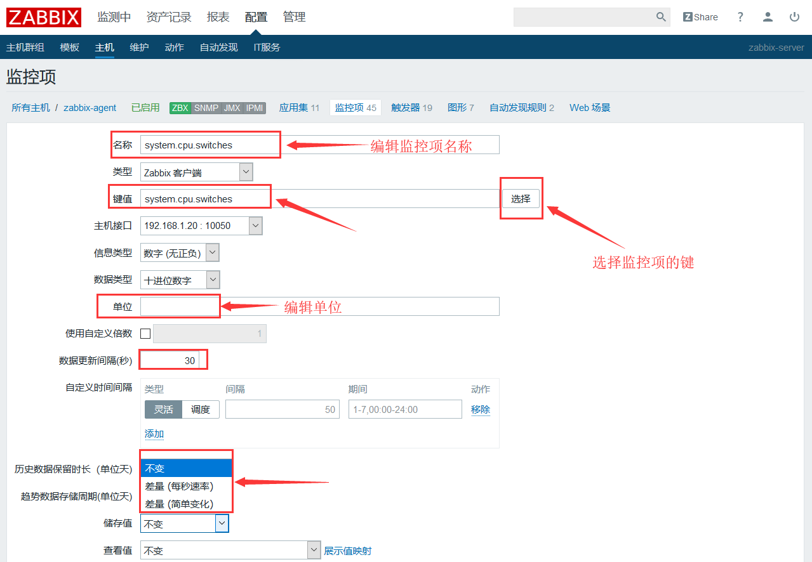
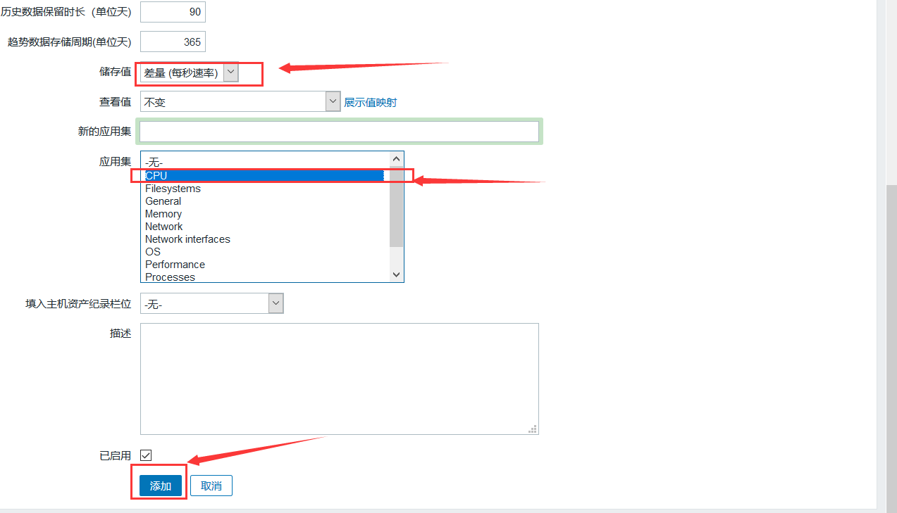
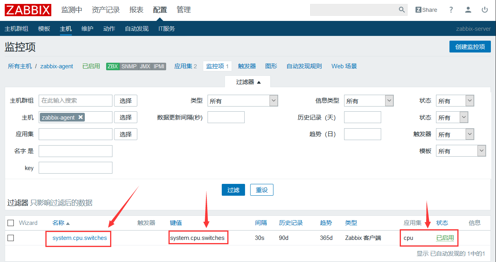
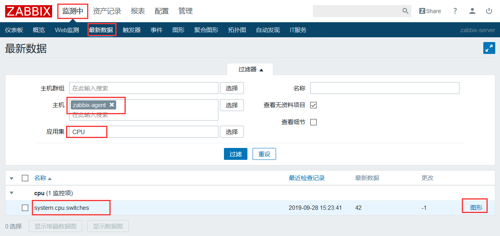
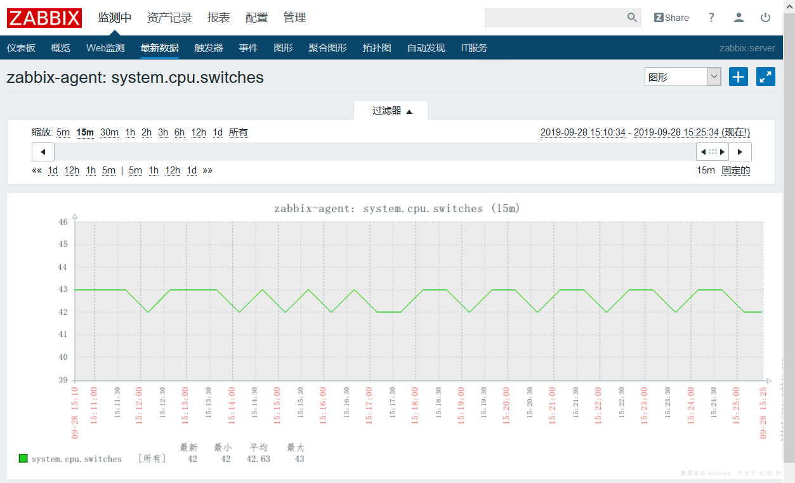
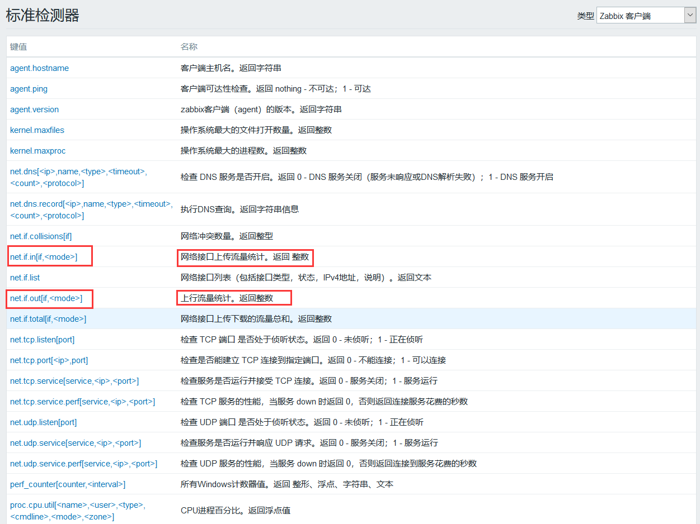
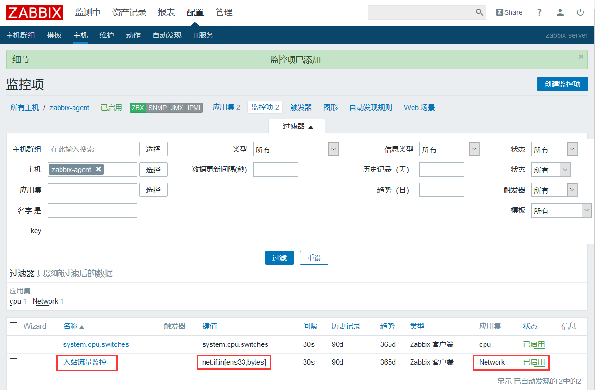
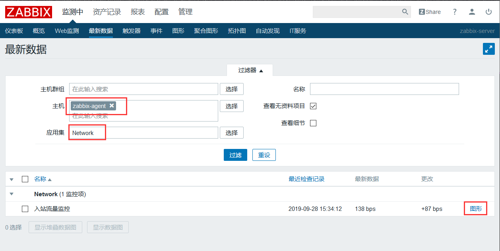
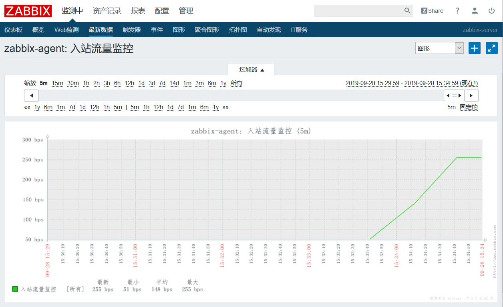

zabbix入门之添加监控项
添加一个不带参数的监控项（system.cpu.switches）
进入“配置”–>“主机”选择某主机的“监控项”

选择创建监控项

键值后边的“选择”提供了大量的键值，带有[ ]的需要定义参数值，这里选择system.cpu.switches

注：储存值：
不变：表示获取到的值是什么样子的，就在数据库中存储为什么样子。
差量（每秒速率）：表示本次收集到的信息值减去上一次收集到的信息值，得出的差值。
差量（简单变化）：表示本次收集的值减去上次收集到的值后，再除以两次收集信息的间隔时间。
这里我们要监控的是cpu上下文切换的次数，这是一个不断增长的值，所以这里我们选差量（每秒速率），即可监控到不同时段内cpu上下文切换的频率了。另外选择与监控项匹配的应用集以便查找，最后点击添加。

可以看到，system.cpu.switches这个监控项已经被添加

查看是否获取数据


添加一个带有参数的监控项
方法跟上面一样




